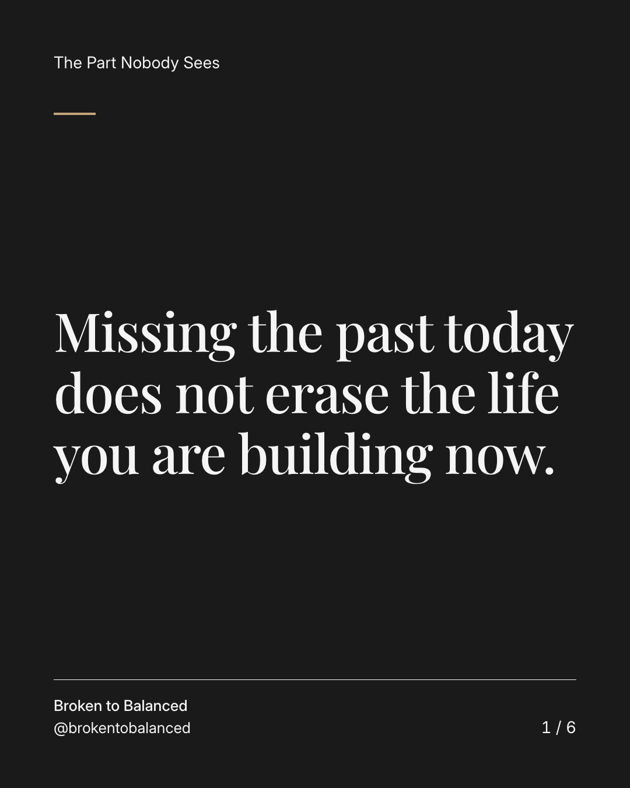
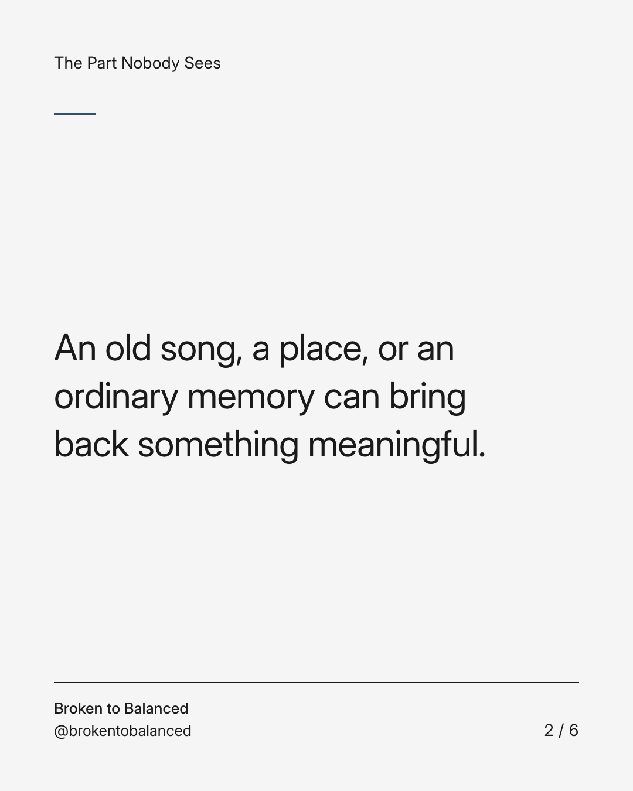
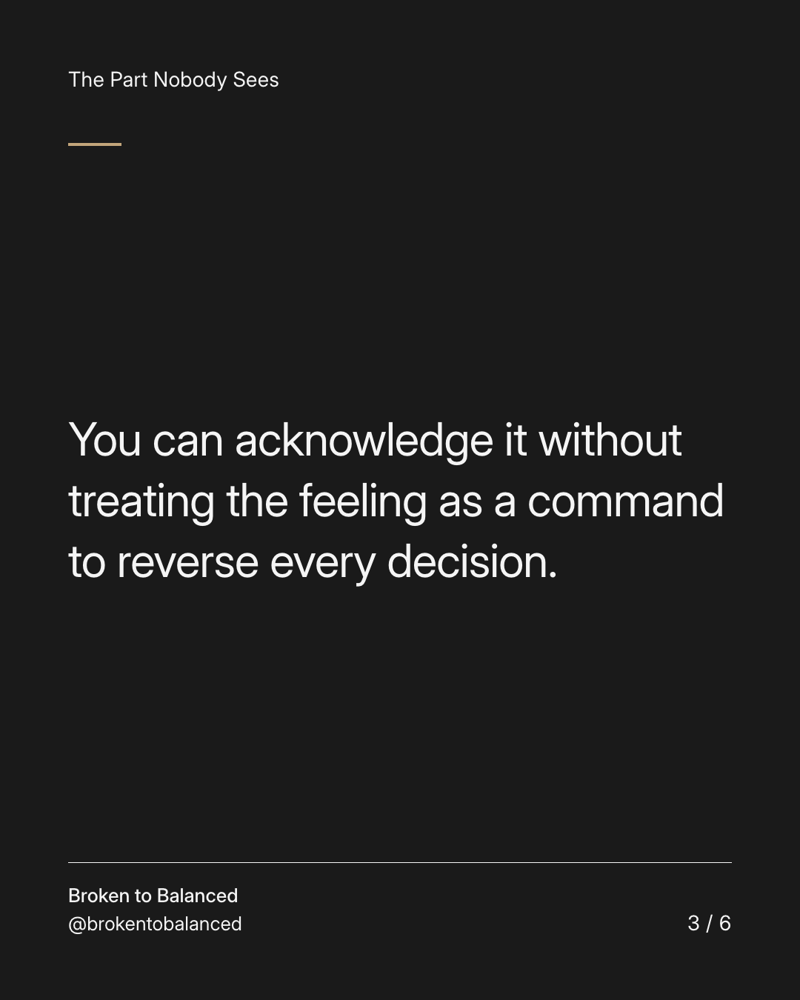
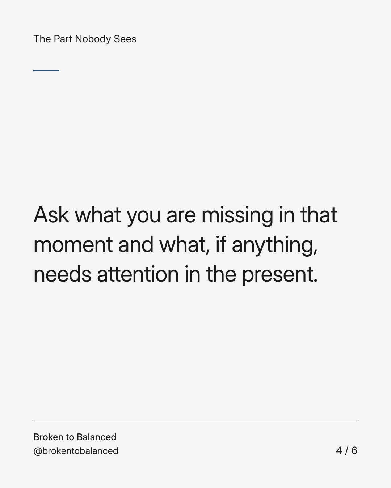
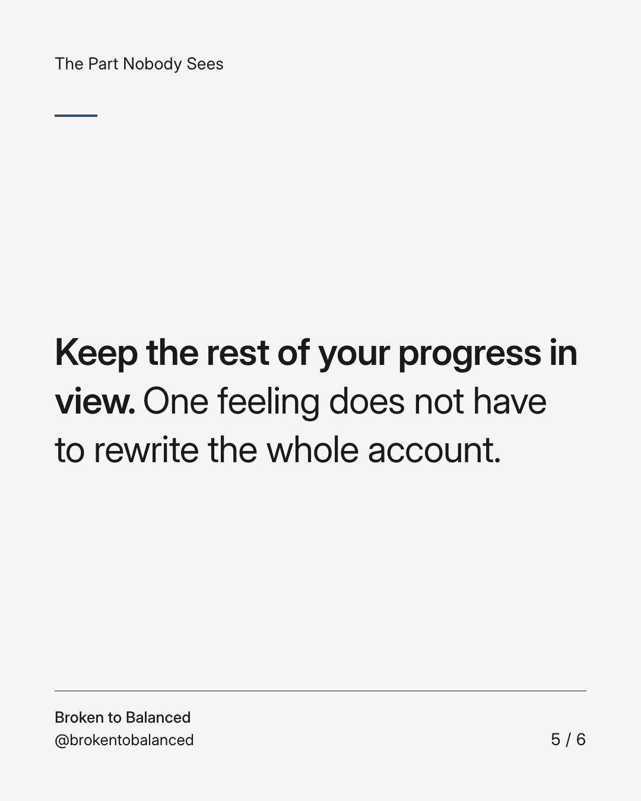
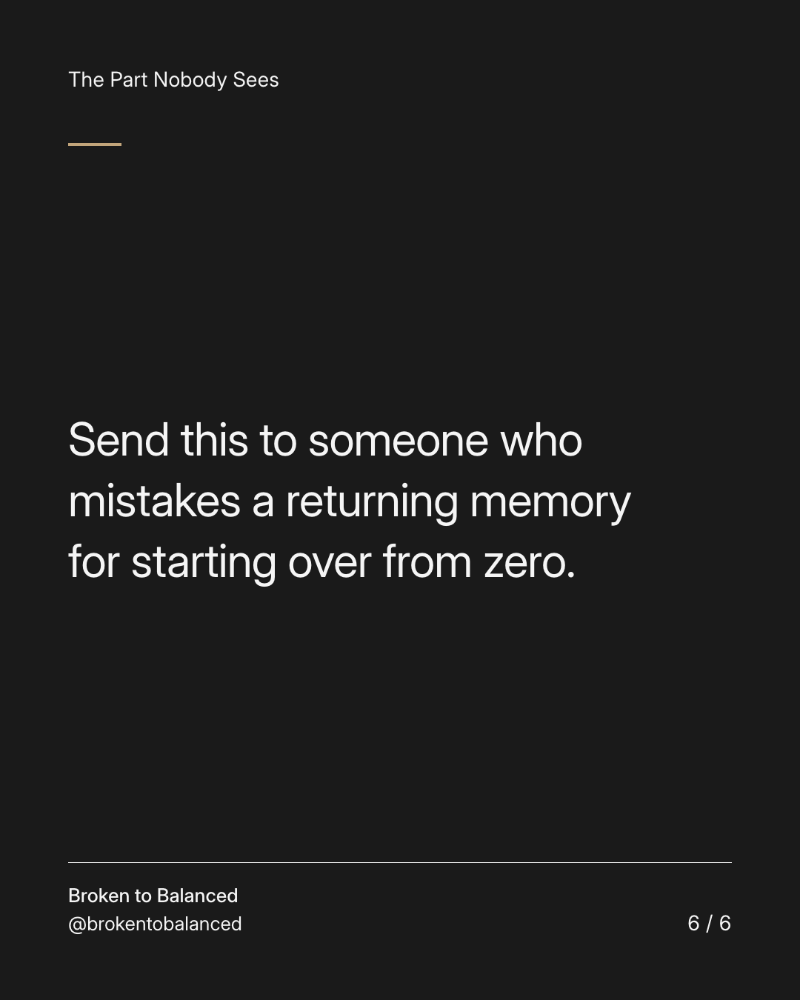

Exact text and accessibility text
Missing the past today does not erase the life you are building now.
Slide 1 of 6. Missing the past today does not erase the life you are building now.


Exact text and accessibility text
An old song, a place, or an ordinary memory can bring back something meaningful.
Slide 2 of 6. An old song, a place, or an ordinary memory can bring back something meaningful.


Exact text and accessibility text
You can acknowledge it without treating the feeling as a command to reverse every decision.
Slide 3 of 6. You can acknowledge it without treating the feeling as a command to reverse every decision.


Exact text and accessibility text
Ask what you are missing in that moment and what, if anything, needs attention in the present.
Slide 4 of 6. Ask what you are missing in that moment and what, if anything, needs attention in the present.


Exact text and accessibility text
Keep the rest of your progress in view. One feeling does not have to rewrite the whole account.
Slide 5 of 6. Keep the rest of your progress in view. One feeling does not have to rewrite the whole account.


Exact text and accessibility text
Send this to someone who mistakes a returning memory for starting over from zero.
Slide 6 of 6. Send this to someone who mistakes a returning memory for starting over from zero.
Exact caption
Plain-text fallback: select and copy the caption.